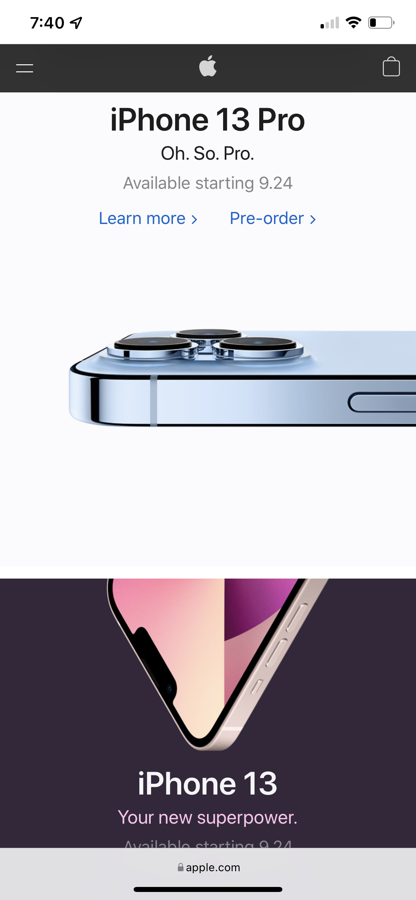

Hicks Law
Hick’s Law (or the Hick-Hyman Law) states that the more choices a person is presented with, the longer the person will take to reach a decision. You can apply Hicks law very simply to your website. Make sure you reduce the number of stimuli and get faster decision making.
A great example of this would be Amazon.com. Amazon has unlimited amounts of options. But because of good design, it doesnt overwhelm the user and you can find what you are looking for.

Fitts Law
Fitts’ law states that the amount of time required for a person to move a pointer to a target area to another target area like a button. The study basically states that the longer the distance and smaller the button, the longer it takes to complete an action.
This goes along heavily into UX design and User interface. For example, mobile devices are more likely to have larger buttons, due to people having to use their fingers with smaller screens. This has increased the use of dropdown menus, pop-up menus, ect.
RottonTomatoes provides an excellent example of the bottom menu following you as you scroll down the screen, creating a short easy button to click.

White Space and Clear Design
White space explains itself almost. White space is the space around your objects and menus. Sometimes this can be reffered to as negative space. White space can chane the way your website is designed and can be crucial to any business.
White space can provide us with focused attention to what matters on a page and even increased interactions.
Apple.com gives us an excellent example on the sleek design white space can give us when considering the way things are layed out.
